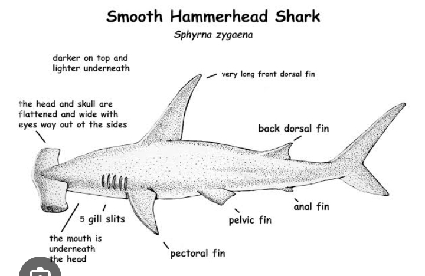

Practical on Sphyrna zygaena (Smooth Hammerhead Shark)
Introduction
Sphyrna zygaena, commonly known as the Smooth Hammerhead Shark, is a large, coastal and pelagic shark species. It is known for its distinctive hammer-shaped head, which enhances its sensory abilities and maneuverability in water.
Scientific Classification
- Kingdom: Animalia
- Phylum: Chordata
- Class: Chondrichthyes
- Order: Carcharhiniformes
- Family: Sphyrnidae
- Genus: Sphyrna
- Species: Sphyrna zygaena
Morphology
- Body: Streamlined, powerful body with a characteristic hammer-shaped head.
- Head & Mouth: Broad and flattened head with widely spaced eyes for enhanced vision.
- Fins: Large first dorsal fin, a smaller second dorsal fin, and a powerful caudal fin.
- Color: Grayish-brown to olive on top, lighter on the underside.
Habitat & Distribution
- Found in temperate and tropical waters worldwide, including the Atlantic, Pacific, and Indian Oceans.
- Prefers coastal areas, estuaries, and the open ocean, often migrating seasonally.
Feeding Habits
Carnivorous, feeding on fish, squid, crustaceans, and smaller sharks. Uses its head to pin prey against the seabed.
Reproductive Biology
- Reproduction Type: Viviparous (gives birth to live young).
- Gestation Period: Approximately 10-11 months.
- Litter Size: Typically 20-50 pups per litter.
Economic & Ecological Importance
- Fisheries: Targeted for meat, fins (for shark fin soup), and liver oil.
- Ecological Role: Top predator, helping maintain the balance of marine ecosystems.
- Threats: Overfishing, habitat degradation, and bycatch in commercial fisheries.
Conservation & Management
- Listed as "Vulnerable" by the IUCN due to overfishing.
- International fishing regulations and marine protected areas help protect populations.
- Public awareness campaigns and research programs support conservation efforts.
Diagram

Fig: External structure of Sphyrna zygaena
Conclusion
*Sphyrna zygaena* is a unique and ecologically important species of shark. Conservation efforts are crucial to protect it from overfishing and habitat destruction.